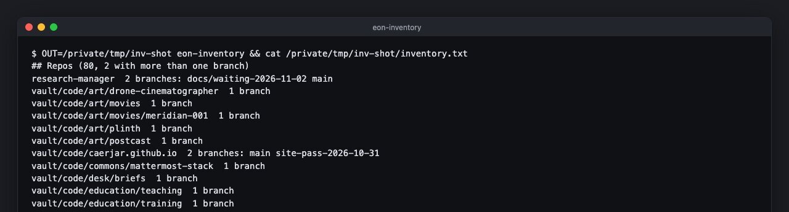

76 / project
eon-inventory
A daily list of every repository, worktree and running container
A shell script that answers one question every day: what git repositories, linked worktrees and running Docker containers exist in the studio's working folder. It writes the answer as one plain-text file, keeps a dated copy only when the answer changed, and is run by launchd.

What it lists
- Repositories, each with its number of local branches, and the branch names whenever there is more than one.
- Worktrees and submodules, each with the repository that owns it, marked
MISSINGwhen the folder it points back to is gone. - Running containers, with image, compose project and ports, or a plain note when Docker is not running.
It skips node_modules and its own output folder while it searches.
Only what changed
The file carries no timestamps, so two runs over the same machine produce the same bytes. A dated copy is saved only when today's list differs from the last one, which makes the history a record of changes rather than of days. Each run adds one line to a log saying whether anything changed.
Runs
once a day, from launchd
once a day, from launchd
Writes
one plain-text inventory, plus a dated copy when it changes
one plain-text inventory, plus a dated copy when it changes
Repository: private
All work